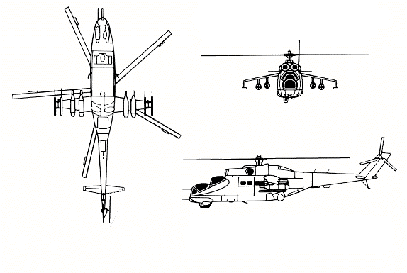
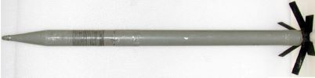
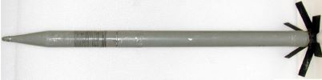
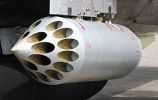
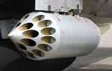

Мі-24А — перша серійна модифікація
ЛТХ Мі-24П
Екіпаж, чол - 2
Максимальна швидкість, км/год – 335
Крейсерська швидкість, км/год – 270
Статистична стеля – 1500м
Динамічна стеля – 4500м
Дальність, км Перегоночная – 1000
Дальність дії – 224м
Максимальна злітна маса – 12000кг
Нормальна злітна маса – 11200кг
Маса порожнього вертольота – 8200кг
Максимальне бойове навантаження - 2500кг
Кількість перевозимих людей – 8 десантників
Кількість перевозимих людей – 4 поранених
Габарити вертольота:
Діаметр несучого гвинта – 17,3м
Діаметр хвостового гвинта – 1,5м
Розмах крила – 6,5м
Довжина – 17,52м
Висота – 3,9м
Ширина – 1,7м
Озброєння
Курсове озброєння
Підвісне озброєння
На крилах гелікоптера розміщуються 6 вузлів підвіски, з яких два вузли можуть використовуватися виключно для підвісу ПТКРів.Крайні вузли для підвісу виключно ПТКРів
Серед підвісного озброєння є блоки НАР, керовані ракети "повітря-повітря", авіаційні бомби та контейнери з гарматами
НАР:
- 55мм С-5
- 80мм С-8
- 240мм С-24Б
 

Для запуску НАРів використовуються різноманітні ПУ:
- УВ-32-57
- УВ-20-57
- УБ-20-80
 

Бомби калібрів:
- 250кг
- 500кг


Фаб-250 та Фаб-500
Зокрема фугасні, кластерні, напалмові та димові
Та інше підвісне озброєння
- КРПП Р-60, Р-60М
- ПТКР Штурм-В
- Контейнер УПК-23-250 з 23-мм гарматою ГШ-23Л і 250 набоями
Можливі комбнації підвісного озброєння